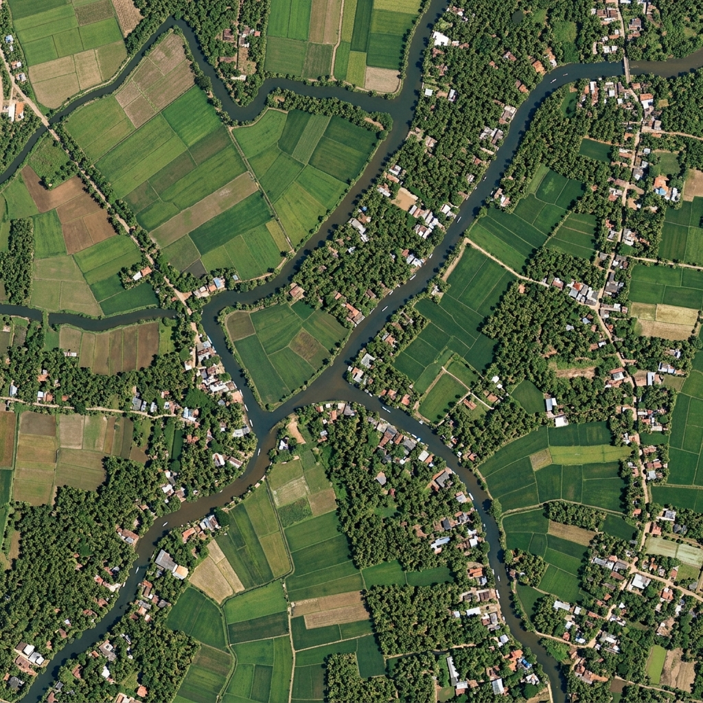
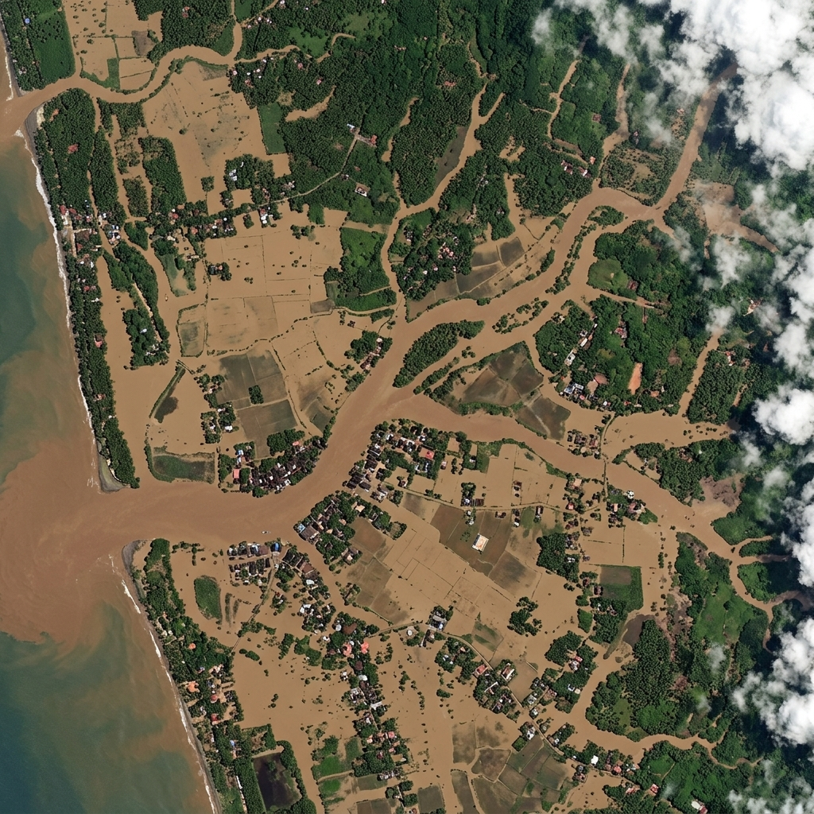
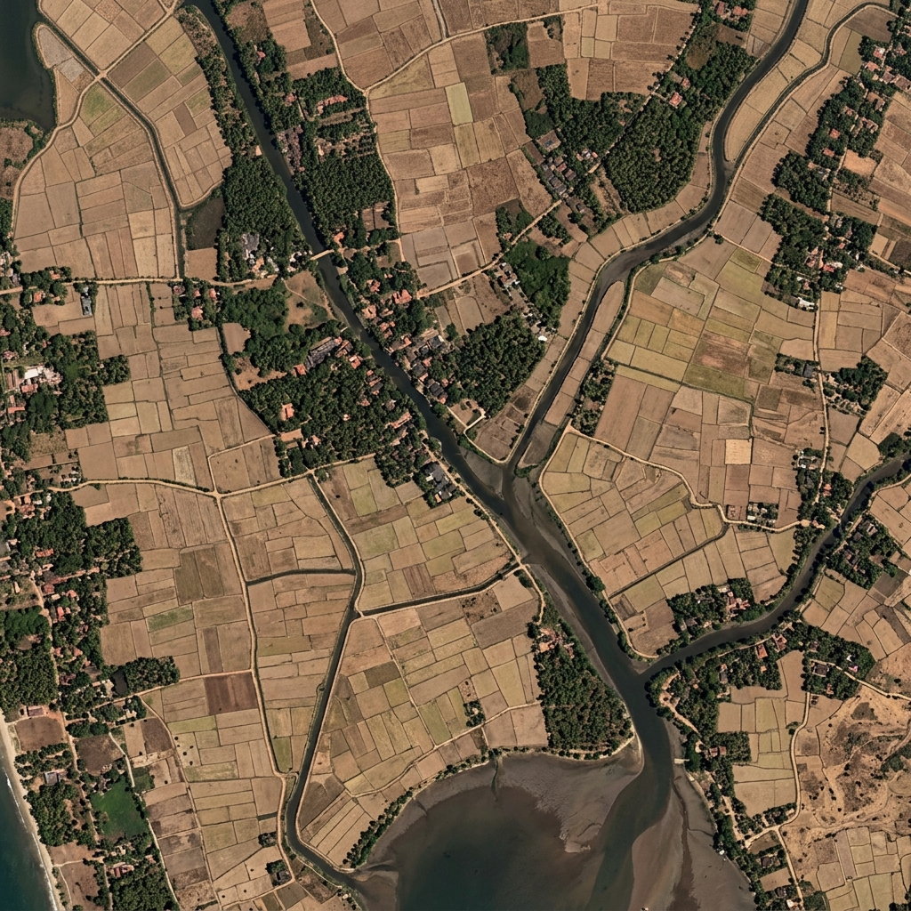
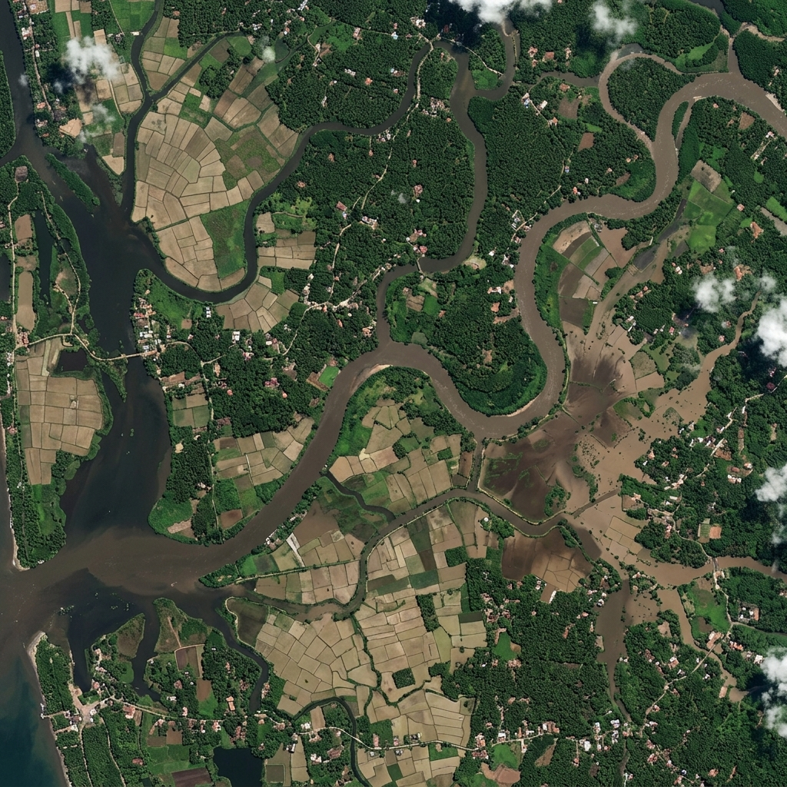

Satellite Imagery Comparison


Inundation Timeline Sequence

May 28, 2026Pre-Monsoon Dry
Baseline Reference

July 05, 2026Early Flood Onset
Peak Inundation
Inundation Metrics
Baseline water coverage
0.0 sq km · Pre-flood reference
Post-flood water coverage
0.0 sq km · Current inundation
Expanded inundation area
Additional flooded area
Stagnant water pockets
Vector breeding zones identified
Water Expansion Rate
Water expansion rate
Catastrophic increase from baseline flood coverage
Risk Indicators
Catastrophic flood inundation & epidemic alert
High disease vector risk
Standing water detected. Mosquito/pathogen breeding conditions present.
Detection Confidence
Detection Confidence Score
High confidence driven by excellent image quality and minimal cloud obstruction. Assessment suitable for outbreak risk modeling.
Assessment Summary
| Metric | Value | Details |
|---|---|---|
| Baseline water coverage | 18.0% | 127.2 sq km |
| Post-flood water coverage | 36.0% | 254.4 sq km |
| Water expansion rate | +100.0% | Catastrophic increase |
| Severity level | VERY HIGH | Epidemic alert threshold |
| Detection confidence | 95.25% | Cloud: 5% · GSD: 3.0 m/pixel |